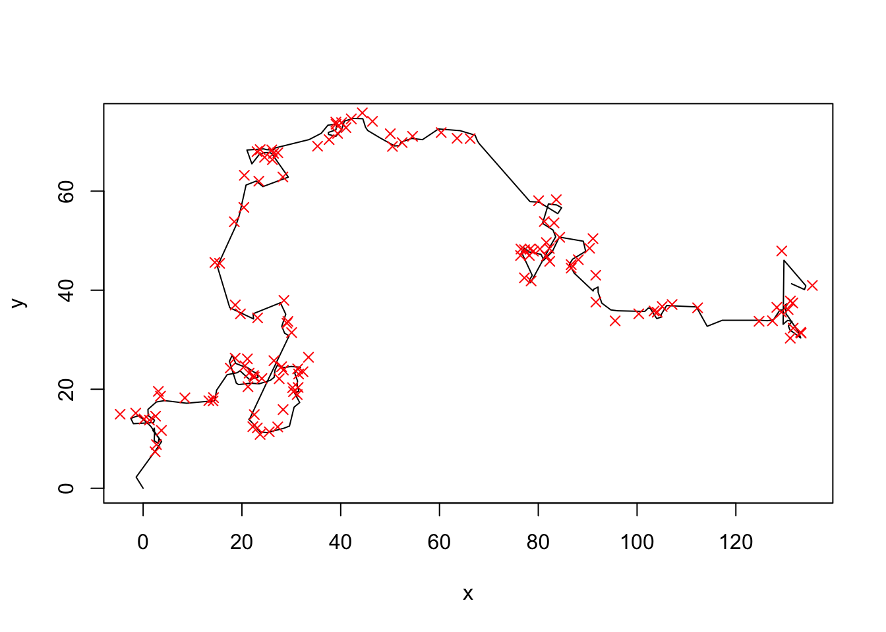

stochasticModel <- function(par){
if (par[2] + par[1] <= 0) return(rep(-9999,20))
else return(rnorm(20, mean = (2.7*par[1] * par[2]), sd = par[2] + par[1] ))
}15 Approximate Bayesian Inference
15.1 Motivation
In Hartig, F.; Calabrese, J. M.; Reineking, B.; Wiegand, T. & Huth, A. (2011) Statistical inference for stochastic simulation models - theory and application. Ecol. Lett., 14, 816-827, we classify two main competing methods for models via simulation-based likelihood approximation
Likelihood-approximations based on local, non-parametric approximations of the variance of the simulation outputs, particularly Approximate Bayesian Computation (ABC, Beaumont, M. A. (2010) Approximate Bayesian computation in evolution and ecology. Annu. Rev. Ecol. Evol. Syst., 41, 379-406.)
Likelihood-approximations based on parametric, typically global approximation of the simulation output such as Synthetic Likelihood, see Wood, S. N. (2010) Statistical inference for noisy nonlinear ecological dynamic systems. Nature, 466, 1102-1104. An example for fitting a stochastic forest gap model do data via this method is Hartig, F.; Dislich, C.; Wiegand, T. & Huth, A. (2014) Technical Note: Approximate Bayesian parameterization of a process-based tropical forest model. Biogeosciences, 11, 1261-1272.
15.2 Example
Assume we have a stochastic model that we want to fit. It takes one parameter, and has an output of 10 values which happen to be around the mean of the parameter that we put in
Lets’s create some data with known parameters
data <- stochasticModel(c(3,-2))15.2.1 Summary statistics
We want to use ABC / synthetic likelihood to infer the parameters that were used. Both ABC and synthetic likelihoods require summary statistics, we use mean and sd of the data.
meandata <- mean(data)
standarddeviationdata <- sd(data)15.2.2 ABC-MCMC solution
Following Marjoram, P.; Molitor, J.; Plagnol, V. & Tavare, S. (2003) Markov chain Monte Carlo without likelihoods. Proc. Natl. Acad. Sci. USA, 100, 15324-15328, we plug the ABC acceptance into a standard metropolis hastings MCMC.
library(coda)
run_MCMC_ABC <- function(startvalue, iterations){
chain = array(dim = c(iterations+1,2))
chain[1,] = startvalue
for (i in 1:iterations){
# proposalfunction
proposal = rnorm(2,mean = chain[i,], sd= c(0.2,0.2))
simulation <- stochasticModel(proposal)
# comparison with the observed summary statistics
diffmean <- abs(mean(simulation) - meandata)
diffsd <- abs(sd(simulation) - standarddeviationdata)
if((diffmean < 0.3) & (diffsd < 0.3)){
chain[i+1,] = proposal
}else{
chain[i+1,] = chain[i,]
}
}
return(mcmc(chain))
}
posterior <- run_MCMC_ABC(c(3,-2),50000)
plot(posterior)15.2.3 Synthetic likelihood
Following Wood, S. N. (2010) Statistical inference for noisy nonlinear ecological dynamic systems. Nature, 466, 1102-1104 and Hartig, F.; Dislich, C.; Wiegand, T. & Huth, A. (2014) Technical Note: Approximate Bayesian parameterization of a process-based tropical forest model. Biogeosciences, 11, 1261-1272, the synthetic likelihood approach is based on sampling a few times from the model, and approximating the likelihood by fitting a Gaussian distribution to the simulation outputs:
run_MCMC_Synthetic <- function(startvalue, iterations){
chain = array(dim = c(iterations+1,2))
chain[1,] = startvalue
for (i in 1:iterations){
# proposalfunction
proposal = rnorm(2,mean = chain[i,], sd= c(0.2,0.2))
# simulate several model runs
simualatedData <- matrix(NA, nrow = 100, ncol = 2)
for (i in 1:100){
simulation <- stochasticModel(c(3,-2))
simualatedData[i,] <- c(mean(simulation) , sd(simulation))
}
syntheticLikelihood1 <- fitdistr(simualatedData[1,], "normal")
syntheticLikelihood2 <- fitdistr(simualatedData[2,], "normal")
prob1 <- dnorm(meandata-syntheticLikelihood1$estimate[1], sd = syntheticLikelihood1$estimate[2], log = T)
prob2 <- dnorm(standarddeviationdata-syntheticLikelihood2$estimate[1], sd = syntheticLikelihood2$estimate[2], log = T)
if(prob < runif(1)){
chain[i+1,] = proposal
}else{
chain[i+1,] = chain[i,]
}
}
return(mcmc(chain))
}
posterior <- run_MCMC_ABC(c(3,-2),20000)
plot(posterior)15.3 A movement model fit with ABC-Rejection and ABC-MCMC
The ABC rejection was originally proposed by Tavare, 1997. The ABC-MCMC was suggested by Marjoram, P.; Molitor, J.; Plagnol, V. & Tavare, S. (2003) Markov chain Monte Carlo without likelihoods. Proc. Natl. Acad. Sci. USA, 100, 15324-15328.
Code implemented by Florian Hartig, following the pseudocode from Hartig, F.; Calabrese, J. M.; Reineking, B.; Wiegand, T. & Huth, A. (2011) Statistical inference for stochastic simulation models - theory and application. Ecol. Lett., 14, 816-827., supporting information.
15.3.1 The model and data
15.3.1.1 Process-model
library(compiler)
model <- function(params=2, startvalues = c(0,0,0), steps = 200){
x = startvalues[1]
y = startvalues[2]
direction = startvalues[3]
movementLength = params[1]
turningWidth = 1
output = data.frame(x = rep(NA, steps+1), y = rep(NA, steps+1))
output[1, ] = c(x,y)
for (i in 1:steps){
direction = direction + rnorm(1,0,turningWidth)
length = rexp(1, 1/movementLength)
x = x + sin(direction) * length
y = y + cos(direction) * length
output[i+1, ] = c(x,y)
}
return(output)
}
model <- cmpfun(model)Let’s see what the model does
data <- model()
plot(data, type = "l")15.3.1.2 Observation model
Assume we have recorded the test data. In fact, let’s do it a bit harder. Assume we observe with error, and our measurement device has a problem - if the x-values have a digit larger than 0.7, we get an NA
observationModel <- function(realData, sd=1){
realData$xobs = rnorm(length(realData$x), mean = realData$x, sd = sd)
realData$yobs = rnorm(length(realData$x), mean = realData$y, sd = sd)
realData$xobs[realData$xobs - floor(realData$xobs) > 0.7 ] = NA
return(realData)
}
obsdata <- observationModel(data)
plot(data, type = "l")
points(obsdata$xobs, obsdata$yobs, col = "red", pch = 4)
15.3.2 Summary statistics
summaryStatistics <- function(dat){
meandisplacement = mean(sqrt(diff(dat$xobs)^2 + diff(dat$yobs)^2), na.rm = T)
meandisplacement10 = mean(sqrt(diff(dat$xobs, lag = 2)^2 + diff(dat$yobs, lag = 2)^2), na.rm = T)/3
#meanturning = mean(abs(diff(atan2(diff(dat$yobs),diff(dat$xobs)))), na.rm = T)
return(c(meandisplacement, meandisplacement10))
}
dataSummary <- summaryStatistics(obsdata)
dataSummary[1] 2.803799 1.43316815.3.3 ABC rejection algorithm
n = 10000
fit = data.frame(movementLength = runif(n, 0, 5), error = runif(n, 0,5), distance = rep(NA, n))
for (i in 1:n){
simulatedPrediction <- model(fit[i,1])
simulatedObservation<- observationModel(simulatedPrediction, fit[i,2])
simulatedSummary <- summaryStatistics(simulatedObservation)
simulatedSummary
#deviation = max( simulatedSummary - dataSummary)
deviation = sqrt(sum((simulatedSummary - dataSummary)^2))
fit[i,3] = deviation
}I had already calculated the euclidian distance between observed and simulated summaries. We now plot parameters for different acceptance intervals
plot(fit[fit[,3] < 1, 1:2], xlim = c(0,6), ylim = c(0,5), col = "lightgrey", main = "Accepted parameters for \n different values of epsilon")
points(fit[fit[,3] < 0.2, 1:2], pch = 18, col = "gray")
points(fit[fit[,3] < 0.1, 1:2], pch = 8, col = "red")
legend("topright", c("< 1", "< 0.2", "< 0.1"), pch = c(1,18,8), col = c("lightgrey", "gray", "red"))
abline(v = 2)
abline(h = 1) 15.3.4 ABC-MCMC Algorithm
n = 10000
fit = data.frame(movementLength = rep(NA, n), error = rep(NA, n), distance = rep(NA, n))
currentPar = c(2,0.9)
for (i in 1:n){
newPar = rnorm(2,currentPar, sd = c(0.2,0.2))
if (min(newPar) < 0 ) fit[i,] = c(currentPar, deviation)
else{
simulatedPrediction <- model(newPar[1])
simulatedObservation<- observationModel(simulatedPrediction, newPar[2])
simulatedSummary <- summaryStatistics(simulatedObservation)
deviation = sqrt(sum( simulatedSummary - dataSummary)^2)
if (deviation < 0.2){
fit[i,] = c(newPar, deviation)
currentPar = newPar
}
else fit[i,] = c(currentPar, deviation)
}
}plot(fit[, 1:2], xlim = c(0,6), ylim = c(0,5), col = "#00000022", main = "Accepted parameters")
abline(v = 2)
abline(h = 1)